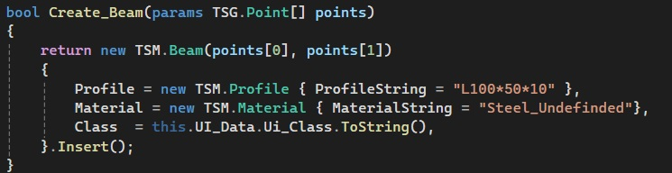

.svg)
Метод Run
Сигнатура метода:
Переходим к переопределению метода Run. Внутри него используем try-catch, чтобы отловить возможные ошибки.
Вот краткий план, что именно необходимо сделать методу:
Рассмотрим каждый этап подробнее.
В методе Run в первую очередь мы должны достать из аргумента метода Run те данные, которые мы в него вложили в методе DefineInput. Выходным типом данных в этом методе был List
Отдельно создаем метод для отрисовки балки Create_Beam. В качестве аргумента используем params TSG.Point[] points.
Ключевое слово params означает, что мы должны ввести какой-то массив, но оно освобождает нас от необходимости в явном виде этот массив указывать, т.е. массив создается самим инструментом.
Задаем Profile (сечение балки) и Material (малериал балки). То есть те значения, которые будут у балки по умолчанию, иначе балка не создастся. Всё это можно будет поменять через пользовательский интерфейс. Начальную и конечную точки мы указываем через аргументы конструктора (new TSM.Beam(points[0], points[1])) Также задаем цвет, который мы назначим в классе Ui_Data, за цвет в Tekla отвечает свойство Class. Цвета задаются числом и в интерфейсе мы их тоже видим числом, но в системе они прописываются текстом. Поэтому цвет нужно обязательно привести к типу String.
Возвращаемся к методу Run и вызываем метод Create_Beam.
Теперь мы вызываем метод SetValueFromDialog(который будет описан позднее).
Используем метод CommitChanges, который фиксирует изменения, внесенные в базу данных модели на данный момент. Один коммит - это то, что пользователь может позже отменить с помощью команды undo. Коммит также запускает отображение измененной модели на видимых видах.